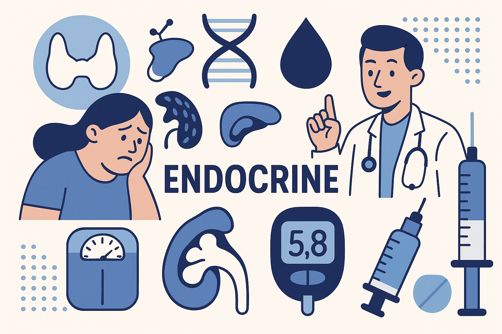

Bienvenido a EndocrineHub
Tu portal de herramientas y apuntes para endocrinología. Este espacio está diseñado para todos los endocrinólogos que buscan herramientas prácticas y actualizadas para su día a día. Aquí encontrarás recursos creados específicamente para facilitar la práctica clínica, optimizar la toma de decisiones y apoyar la formación continua en endocrinología. Nuestra página se enriquece de manera constante con nuevos apuntes, guías y utilidades que reflejan los avances más recientes en la especialidad, con un enfoque práctico y accesible. El objetivo es construir, junto a la comunidad de endocrinólogos, un lugar de referencia útil, dinámico y en permanente evolución.
